Atelier artisanal du bois, à Munster
Ébéniste à Munster. Le bois, à votre mesure.
Lucas Bléger dessine, fabrique et restaure : agencements, cuisines, meubles, escaliers.


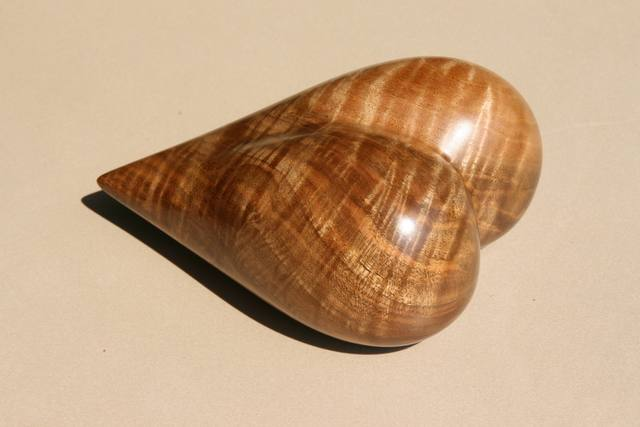
Du placard sous les toits au cœur en noyer
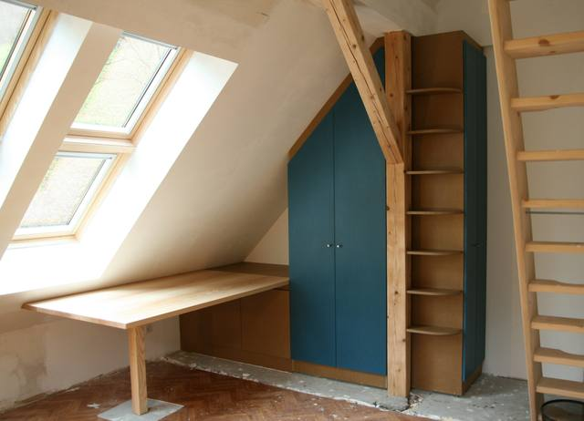
Agencement
Bibliothèques, dressings, placards, meubles TV, sous-pentes.
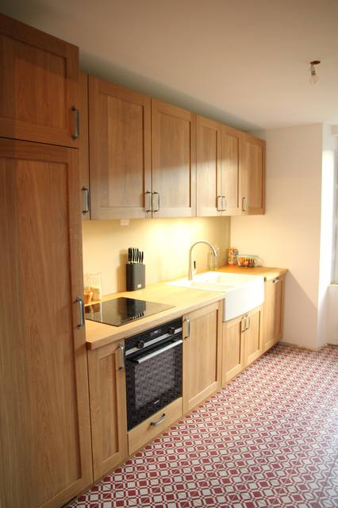
Cuisines
En chêne, en frêne ou en couleur, plans de travail compris.

Mobilier
Tables, lits, bureaux. Traditionnel ou contemporain.

Restauration
Meubles anciens, dans les règles de l’art.

Menuiserie
Escaliers, portes, planchers, garde-corps.
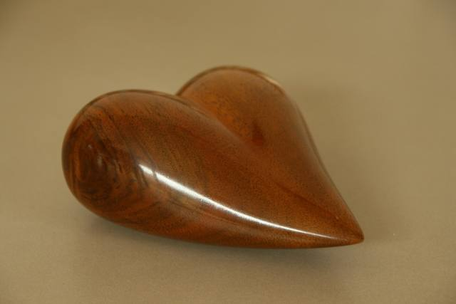
Petits objets
Cœurs en noyer, planches, sculptures.
Une seconde vie
Il était une fois un piano… devenu bureau
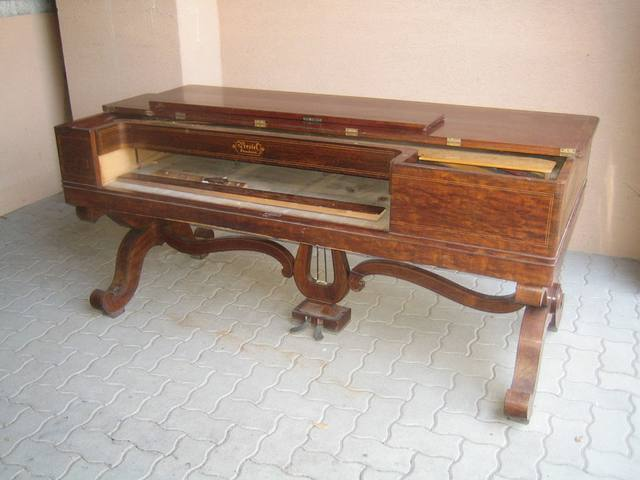
Avant Un piano-forte Prestel, qui ne servait plus. 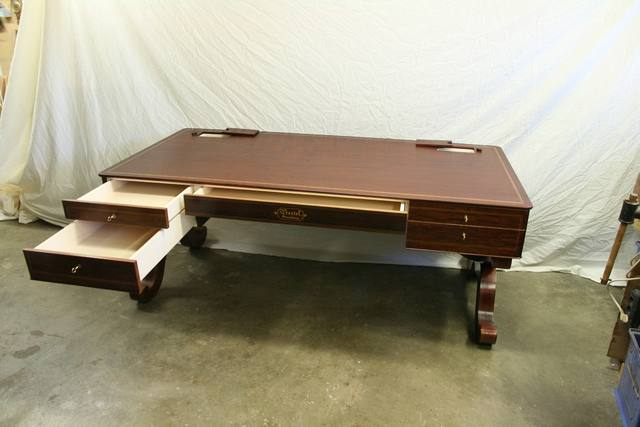
Après Le même meuble, devenu un bureau avec ses tiroirs. 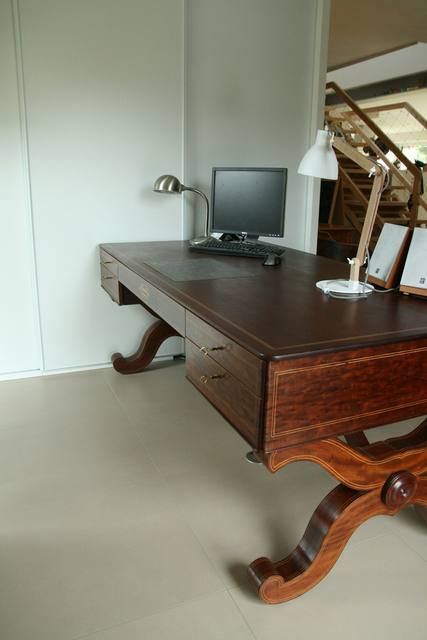
Chez lui Le bureau en situation.
Restauration
Faites glisser le temps
Une armoire fatiguée n’est pas une armoire perdue. Massif ou plaqué, verni au tampon : les meubles anciens sont restaurés dans les règles de l’art.
Tous les avant / après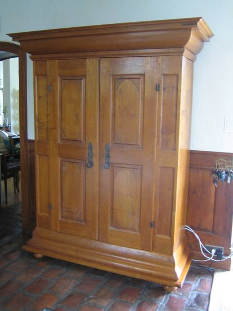
Après 
Avant Armoire en merisier
Un meuble d’époque Renaissance, restauré.
Le nuancier
À chaque projet son essence
Ces cinq échantillons sont découpés dans des photos de ses propres réalisations. Touchez-en un pour voir les pièces.
 ChêneDur et solide, au veinage marqué. Cuisines, tables, bibliothèques.
ChêneDur et solide, au veinage marqué. Cuisines, tables, bibliothèques. FrêneClair et lumineux, aux veines bien dessinées. Cuisines, escaliers.
FrêneClair et lumineux, aux veines bien dessinées. Cuisines, escaliers.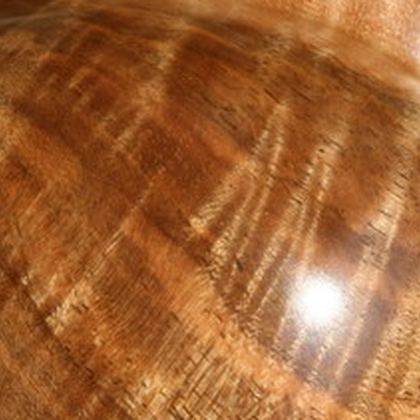
NoyerSombre, chaud, parfois flammé. Meubles de style et pièces d’exception.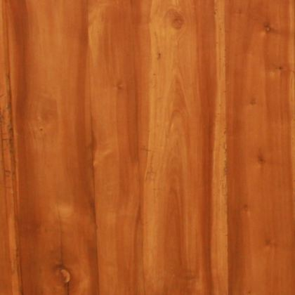
MerisierGrain fin, teinte rosée qui se patine. Armoires et bahuts.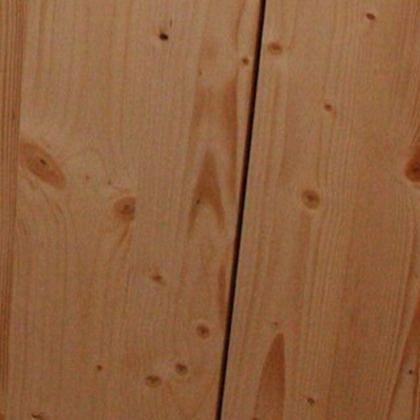
SapinTendre et blond, avec ses nœuds. L’esprit des fermes de montagne.
Ils lui ont confié un projet
J'ai engagé la société Presti'Bois, pour la réalisation d'une table basse design, laquée et satinée.
J'ai apporté les premières esquisses et Lucas Bléger a su par ses idées et son professionnalisme concrétiser mon projet.L. · avis Houzz, février 2015 · 5/5 Lucas Bléger a restauré cette armoirette et a lui donné une nouvelle vie. Il a enlevé les panneaux de portes, installé un grillage à poule, fabriqué et ajusté des étagère massives sur crémaillère, remplacé les serrures et les entrées, et réalisé une finition vieillie/patinée. Je suis pleinement satisfaite du résultat, ce meuble s'inscrit parfaitement dans mon intérieur.
G. · avis Houzz, février 2015 · 5/5 Lucas Bléger a su nous écouter, il a apporté les solutions techniques et esthétiques pour optimiser le rangement de notre meuble de salle de bain, tout en maîtrise notre budget. Le travail est soigné et les délais annoncés ont été tenus.
L. · avis Houzz, février 2015 · 5/5
Un coin perdu, un meuble fatigué, une idée ?
Parlons-en. Devis gratuit [à confirmer]